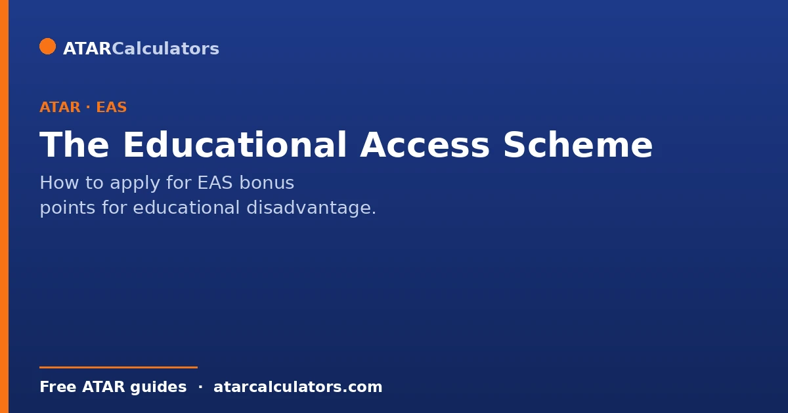
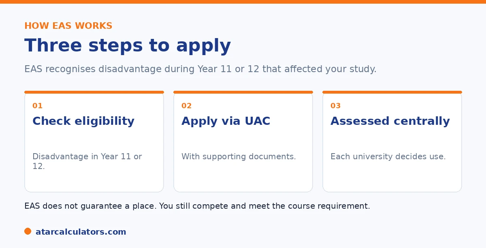

Here is the short version. The Educational Access Scheme, or EAS, is for students whose study was affected by hardship during Year 11 or 12. You apply once through your admissions centre, with supporting documents. It is assessed centrally, and each university decides how to use it, either by lifting your selection rank or holding a reserved place. EAS does not guarantee entry, and some universities set a minimum ATAR before they consider it.
EAS is one of the most valuable schemes, yet many eligible students never apply, often because they are not sure they qualify. The criteria are broader than people expect.
Below is who can apply, and how. To estimate your selection rank with adjustments, use our bonus points calculator.
Key takeaways
- EAS is for educational disadvantage during Year 11 or 12.
- You apply once through your admissions centre.
- You need supporting documents for your circumstances.
- It can lift your selection rank or give a reserved place.
- It does not guarantee entry; you still compete.
- Some universities set a minimum ATAR before considering it.
What the Educational Access Scheme is
The Educational Access Scheme, or EAS, recognises that hardship can affect your results. It is for students whose study was disrupted by difficult circumstances during Year 11 or 12.

The aim is fairness. If your circumstances held your results back, EAS gives universities a way to take that into account.
Who is eligible
The categories are broad. They include financial hardship, an illness or disability, a difficult home environment, English language difficulty, disrupted schooling, refugee status, and attending an under-resourced school, among others.
The key test is that your circumstances affected your study during Year 11 or 12. If that sounds like you, it is worth applying, even if you are unsure. The assessment will decide.
How to apply
You apply once, through your state admissions centre, alongside your university application. In NSW and the ACT this is UAC. You complete one EAS application that covers all participating universities.
You will need supporting documents for your circumstances, such as an educational impact statement, and sometimes a medical impact statement. Your school can usually help. Apply by the deadline, which is often well before offers.
Want to estimate your selection rank?
Try the bonus points calculator →How EAS is used
EAS is assessed centrally, using the same guidelines for everyone. But each university decides how to use the result. Some add points to your selection rank. Others hold several reserved places for EAS students.
Unlike subject and location adjustments, you are usually not told exactly how many points EAS adds, since it works differently across universities and courses. Some universities publish their approach; many do not.
Important limits to know
Two things are worth knowing. First, EAS does not guarantee a place. You still need to meet the course requirement and compete with other applicants. It improves your position; it is not an automatic offer.
Second, some universities set a minimum ATAR before they will consider EAS. And some do not offer it for certain courses, such as competitive ones. So check each university and course. See our bonus points guide.
Understanding these limits keeps your expectations realistic and helps you use EAS where it actually works. The scheme lifts your selection rank, which improves your position against a cut-off. But it does not override the other requirements of a course. You still need any prerequisite subjects, and for courses with extra selection steps like interviews, auditions or portfolios, EAS points do not replace them. Some universities also apply a floor. That means your ATAR must reach a certain level before EAS points are added. So a very low ATAR may not be rescued by the scheme alone. And several the most competitive courses, or specific programs, either cap or exclude EAS adjustments. That is why the value of the scheme varies from course to course. None of this makes EAS less worth pursuing. It simply means you should treat it as a genuine boost within a system that still has other rules, rather than a guaranteed path in. The practical approach is to apply for EAS if you qualify. This is because the points are real and often decisive in the middle of the range. But to check, for each course you want, whether it applies EAS, whether there is a minimum ATAR, and whether any prerequisites or extra selection steps still apply. Used with that awareness, EAS is one of the strongest tools available to students whose results were affected by disadvantage.
What disadvantages count
The Educational Access Scheme recognises circumstances beyond your control that may have affected your studies. These commonly include financial hardship, serious illness or disability, a disrupted or difficult home environment, moving schools, or attending a school in a disadvantaged area.
So EAS is about educational disadvantage, not academic performance. If circumstances made it harder for you to demonstrate your ability, you may be eligible. The specific categories are defined by your admissions centre, so check its list.
The documents you need
EAS applications usually require supporting evidence for each disadvantage you claim. This might include statements from your school, medical documentation, or evidence of financial hardship. Each category has its own required documents, set by the admissions centre.
So gather your evidence early, since collecting documents from schools, doctors or other bodies takes time. An application without the required evidence for a category may not have that category considered, so completeness matters.
How many points does EAS give?
EAS can award equity adjustment points that lift your selection rank, with the number depending on the type and severity of disadvantage and the university’s scheme. It forms part of the total adjustment factors, which are usually capped at around 10 points.
So EAS points are meaningful but bounded, and they combine with any other adjustments up to the cap. The exact points depend on your circumstances and the university, so treat any figure as indicative and check the specific scheme.
When to apply
You usually apply for EAS through your admissions centre, often at the same time as lodging your course preferences, and by a set deadline. Applying late, or missing the deadline, can mean your equity adjustments are not considered.
So note the EAS deadline alongside your other application dates, and apply in good time with your evidence ready. It is one of the schemes that requires an active application, not an automatic adjustment.
Other equity schemes
Beyond EAS, many universities run their own equity and access programs, some with guaranteed consideration or alternative entry for particular groups. These sit alongside the admissions-centre scheme and can provide additional support.
So it is worth checking both your admissions centre’s EAS and each university’s own equity programs. Between them, there may be more support available than a single scheme suggests, especially for students facing significant disadvantage.
What happens after you apply
After you lodge an EAS application with your evidence, your admissions centre assesses each disadvantage you have claimed against its criteria. Approved categories translate into equity adjustment points, which are then applied to your selection rank for eligible courses.
So the outcome is not a change to your ATAR, but adjustment points added to your rank where they apply. You are usually notified of the outcome, and the points feed into your selection ranks when offers are considered.
Is it worth applying for EAS?
If you have experienced genuine educational disadvantage, applying for EAS is usually worthwhile. The points can lift your selection rank across a range of courses, and the main cost is the effort of gathering evidence and applying by the deadline.
So do not rule yourself out. If your circumstances fit the categories, an EAS application can make a real difference to your selection ranks, and there is little downside to applying when you are eligible.
Common questions
How do I apply for EAS bonus points?
You apply once through your state admissions centre, such as UAC in NSW and the ACT, alongside your university application. You provide supporting documents for your circumstances, and apply by the deadline, which is often well before offers.
Am I eligible for the Educational Access Scheme?
You may be if hardship affected your study during Year 11 or 12. Categories include financial hardship, illness or disability, a difficult home environment, disrupted schooling, and refugee status, among others. The assessment decides eligibility.
What documents does EAS need?
Supporting documents for your circumstances, such as an educational impact statement, and sometimes a medical impact statement. Your school can usually help you prepare these. Requirements depend on the categories you apply under.
How many points does EAS give?
It varies, and you are usually not told an exact number. EAS is assessed centrally, but each university decides how to use it, either by lifting your selection rank or holding reserved places. Some publish their approach; many do not.
Does EAS guarantee me a place?
No. EAS does not guarantee entry. You still need to meet the course requirement and compete with other applicants. It can improve your position, but it is not an automatic offer.
Do all universities accept EAS for all courses?
No. Some universities set a minimum ATAR before considering EAS, and some do not offer it for certain courses, such as highly competitive ones. Check each university and course directly.
Estimate your selection rank
See how adjustments could change your selection rank. Free, and no signup.
Open the bonus points calculator →Related guides
This guide is general information for students and parents, not formal admissions advice. Adjustment factors, schemes, caps and course cut-offs are set by each university and can change every year. They differ from one institution to another, and from course to course within the same institution. Always confirm the current details with the specific university and your state admissions centre (UAC, VTAC, QTAC, SATAC or TISC). A useful starting point is UAC's guide to selection rank adjustments. Reviewed by the ATARCalculators Editorial Team.